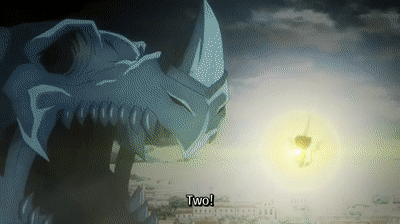
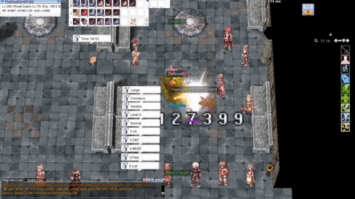

File list
Jump to navigation
Jump to search
This special page shows all uploaded files.
{kind=link}
{kind=link}
| Date | Name | Thumbnail | Size | User | Description | Versions |
|---|---|---|---|---|---|---|
| 01:03, 27 February 2021 | Hesperus Lit.gif (file) |  |
6.13 MB | G00suede | 1 | |
| 03:57, 19 June 2021 | Mee.gif (file) |  |
6.06 MB | G00suede | 1 | |
| 09:32, 1 November 2020 | BPpng.gif (file) |  |
5.8 MB | G00suede | 1 | |
| 01:40, 22 November 2021 | Racing Cap RG.gif (file) |  |
5.79 MB | G00suede | 1 | |
| 04:25, 19 August 2022 | ROGSlim.gif (file) |  |
5.73 MB | G00suede | 1 | |
| 15:16, 6 September 2018 | Gif2 2.gif (file) |  |
5.58 MB | Leriaskho | 1 | |
| 21:55, 13 February 2017 | Archermobbing.gif (file) |  |
5.43 MB | RadenWA | 2 | |
| 00:52, 4 July 2022 | Devo IC.gif (file) |  |
5.39 MB | G00suede | 1 | |
| 07:29, 11 November 2019 | Smart Cast NovaRO.gif (file) |  |
5.29 MB | BlackIntels | Smart Cast NovaEXT NovaRO | 1 |
| 09:15, 1 November 2020 | SCpng.gif (file) |  |
4.95 MB | G00suede | 1 | |
| 22:44, 6 January 2022 | SpamEDSP.gif (file) |  |
4.95 MB | G00suede | 1 | |
| 11:11, 30 April 2021 | Other Shield Skills.gif (file) |  |
4.82 MB | G00suede | 1 | |
| 02:28, 8 March 2021 | MH SC.gif (file) |  |
4.81 MB | G00suede | 1 | |
| 04:15, 3 August 2017 | AB ME cast time.gif (file) |  |
4.73 MB | Renata | 1 | |
| 16:20, 7 September 2018 | Bandicam 2018-07-27 01-18-40-614 1.gif (file) |  |
4.67 MB | Leriaskho | 1 | |
| 09:18, 1 November 2020 | OBpng.gif (file) |  |
4.66 MB | G00suede | 1 | |
| 15:56, 7 March 2020 | Raku Meteor Strike OGH Norm.png (file) | 4.61 MB | G5457s | Raku in OGH Norm | 1 | |
| 03:28, 5 March 2021 | OPOB.gif (file) |  |
4.37 MB | G00suede | 1 | |
| 05:50, 12 October 2020 | EB max damage.gif (file) |  |
4.3 MB | G00suede | 1 | |
| 05:14, 8 September 2018 | Gifcomboo 3.gif (file) |  |
4.22 MB | Leriaskho | 1 | |
| 13:24, 5 October 2020 | EBRG.gif (file) |  |
3.83 MB | G00suede | 1 | |
| 08:57, 8 February 2020 | GarryRage.gif (file) |  |
3.51 MB | Hatsumei | 1 | |
| 11:10, 24 March 2020 | Raid SN Juperos.png (file) | 3.49 MB | G5457s | Melee Super Novice with cheap gears farming in Juperos. | 1 | |
| 12:46, 24 March 2020 | Melee SN Desert Wolf TiredClaw.png (file) | 3.44 MB | G5457s | A young Super Novice learning the ways of the NovaRO world. By inquiring @whobuys, he finds the person buying Blood of Wolf at the highest price. | 1 | |
| 03:07, 23 August 2017 | ABgearswap.gif (file) |  |
3.36 MB | Renata | 1 | |
| 12:18, 17 April 2022 | Fairy Tail 2014 Mavis uses Fairy Law.gif (file) |  | 3.32 MB | G00suede | 1 | |
| 22:45, 9 January 2016 | BlazeShieldTrick Scaled.gif (file) |  |
3.3 MB | Pruu | for use in Pruu's Guide to Kagerou/Oboro for PVM | 1 |
| 18:57, 14 July 2020 | OB CS spam.gif (file) |  | 3.25 MB | G00suede | 1 | |
| 21:58, 9 January 2016 | Freezing Spear Scaled.gif (file) |  |
3.22 MB | Pruu | for use in Pruu's Guide to Kagerou/Oboro for PVM | 1 |
| 09:13, 1 November 2020 | Iconic.gif (file) |  |
3.06 MB | G00suede | 1 | |
| 22:55, 9 January 2016 | ShadowHidingLeapTricks.gif (file) |  |
3.06 MB | Pruu | 3 | |
| 04:51, 9 December 2019 | Mage SN 3.png (file) | 3.02 MB | G5457s | ene | 1 | |
| 03:25, 8 August 2020 | Full package RG.gif (file) | 3 MB | G00suede | 1 | ||
| 21:58, 9 January 2016 | Flaming Petal Scaled.gif (file) |  |
2.96 MB | Pruu | for use in Pruu's Guide to Kagerou/Oboro for PVM | 1 |
| 06:35, 19 April 2022 | Destructive magic.gif (file) |  |
2.95 MB | Miyu | 1 | |
| 13:25, 4 May 2019 | High Flee when Naked.png (file) | 2.95 MB | G5457s | No equips and no shadow gears. Yet flee is a hair over 500. | 1 | |
| 12:41, 24 March 2020 | Melee SN Desert Wolf Sold1.png (file) | 2.92 MB | G5457s | This young Super Novice is tired after battling Desert Wolves for 30 minutes. | 1 | |
| 11:59, 17 June 2017 | SkyFort1.gif (file) | 2.91 MB | Halves | 1 | ||
| 11:13, 24 March 2020 | Melee SN HTF.png (file) | 2.84 MB | G5457s | Melee Super Novice soloing Happy Tree Friends. | 1 | |
| 13:58, 18 January 2019 | Tree of Life 2.png (file) | 2.77 MB | Hakumen | placeholder | 1 | |
| 13:52, 18 January 2019 | Tree of Life.png (file) | 2.77 MB | Hakumen | 3 | ||
| 23:34, 4 January 2021 | 17 2 map.png (file) |  |
2.67 MB | I Know To Write | adjusted the position of red pepper since it was a bit too much to the right | 2 |
| 01:03, 14 February 2022 | OBRG.gif (file) |  |
2.63 MB | G00suede | 1 | |
| 10:54, 9 April 2018 | Madomeme4.gif (file) | 2.51 MB | RadenWA | 1 | ||
| 19:56, 7 June 2019 | Dutchman.png (file) | 2.51 MB | Panic | 1 | ||
| 05:04, 8 September 2018 | Flash 1.gif (file) | 2.37 MB | Leriaskho | 1 | ||
| 10:17, 25 September 2020 | Leinarth.png (file) |  |
2.31 MB | Nithraniel | The french RK boi | 2 |
| 17:22, 9 January 2021 | 172chess03.png (file) | 2.27 MB | Zrzovous | 1 | ||
| 04:19, 25 April 2019 | Mage SN 2.png (file) | 2.27 MB | G5457s | Zero agility, but he can still survive in Rachel Sanctuary indefinitely (until weight limit penalty) just fine even if he's being seriously mobbed. | 1 | |
| 16:12, 10 July 2020 | SC Slow cast.gif (file) |  |
2.24 MB | G00suede | 1 |
{kind=link}
{kind=link}
{kind=link}
{kind=link}
{kind=link}
{kind=link}